Released on October 29, 2008
(Next Release on November 5, 2008)
Measuring U.S. Dependence on Foreign Oil: The What, Where, and When Factors
As policymakers discuss alternative approaches to address high oil prices, demand and supply concerns, participants in the debate often cite estimates of the Nation’s dependence on foreign oil (net imports as a percent of consumption) that vary from 56 percent to more than 70 percent. Why is the range of estimates so wide? Like many estimates that reflect multiple variables, the answer depends on “what,” “where,” and “when” factors.
EIA’s product supplied number is the broadest measure of U.S. consumption of liquid fuels and other petroleum products (and is derived by summing petroleum supply components based on EIA’s survey data). By this measure, U.S consumption totaled about 20.7 million barrels per day (bpd) during 2007. U.S. crude oil input to refineries averaged 15.2 million bpd in 2007, including 10.0 million bpd of imported crude oil, while net product imports (imports less exports) added another 2.0 million bpd for a total of 17.2 million bpd. The 3.5 million bpd difference between consumption and crude oil inputs plus net product imports reflects three main components: 1) the use of natural gas plant liquids (NGPLs) like propane, butane, and ethane; 2) the use of ethanol blended into gasoline; and 3) refinery gain.
To get at the “what” factor, we measure the first and second components listed above. In 2007, U.S. consumption of NGPLs was 2.2 million bpd and consumption of ethanol was 0.4 million bpd. For both NGPLs and ethanol, U.S. net imports are small (about 9 percent of U.S. consumption of those products in 2007). Consequently, calculating import dependence when you include NGPLs and ethanol will come up with a lower dependence than excluding them.
The refinery gain component involves the question of “where” barrels are added to supply. A number of major refining processes, such as fluid catalytic cracking, add volumes when large heavy molecules are broken into lighter molecules. Volume gain processes result in more barrels of output than input, but the output is lighter than the crude oil and unfinished oils put in, so the mass stays the same, i.e., inputs equal outputs when measured in units of mass such as tons. One method counts refinery gain as supply added at the refinery location, so that all refinery gain resulting from refining activity is counted as domestic supply, even when the crude oil and unfinished oils processed actually came from foreign sources. This is not a trivial matter – total refinery gain in 2007 was reported as nearly 1 million bpd. An alternative approach treats refinery gain at the same ratio as crude imports, which in 2007 would have resulted in about 68 percent of refinery gain being considered as imports. However, the latter approach does not account for the role of certain refinery inputs other than crude oil and unfinished oils, which are primarily domestic in origin.
The “when” factor comes in to play because calculations of import dependence also change over time. With U.S. oil production virtually unresponsive to short-run prices, marginal changes in oil consumption are reflected almost one for one in import levels. Net import dependence during the first 9 months of 2008 was 56.4 percent of consumption, 2.6 percent below the level of import dependence during the same period of 2007. The decline resulted from reduced U.S. oil consumption and higher exports during 2008.
Table 1 shows three internally-consistent oil import dependence calculations from the same underlying data. Calculations made using a broad definition of oil tend to provide lower import dependence estimates than those based on narrower definitions, such as crude oil alone. Calculations that associate refinery gain with the refinery location tend to produce lower import dependence estimates than those that attribute refinery gain to the location where refinery inputs were sourced. Insofar as timing is concerned, U.S. import dependence generally increased between 1995 and 2005. However, the decline in U.S. petroleum use in the first 7 months of 2008 resulted in falling U.S. import dependence by all measures.
Market commentators cite a wide range of numbers in describing U.S. oil import dependence, but they are all really based on the same underlying numbers. The danger is in comparing them – sort of like thinking the weather report is for colder weather just because the forecast is in Centigrade rather than Fahrenheit. EIA historically uses the measure in the first column, however, as long as the calculations are done properly, and all comparisons over time are made using a consistent scale, the different measures of import dependence presented in Table 1 show similar trends over time.
| Table 1: Alternative Calculations of U.S. Oil Import Dependence (Percent Dependence) | |||
|---|---|---|---|
| Year | Liquids plus "Other" Petroleum Products, Refinery Gain Counted at Refinery | Liquids plus "Other" Petroleum Products, Refinery Gain Allocated to Source of Crude Oil and Unfinished Oils | Crude Oil Only |
| 1990 thru 2000 | 46.4 | 48.8 | 51.5 |
| 2001 | 55.5 | 58.3 | 61.5 |
| 2002 | 53.4 | 56.4 | 61.1 |
| 2003 | 56.1 | 59.2 | 63.1 |
| 2004 | 58.4 | 61.7 | 65.0 |
| 2005 | 60.3 | 63.6 | 66.3 |
| 2006 | 59.9 | 63.2 | 66.2 |
| 2007 | 58.2 | 61.5 | 66.0 |
| Jan-July 2008 | 56.4 | 59.8 | 65.8 |
Residential Heating Fuel Prices Keep Dropping
Residential heating oil prices decreased once again during the period ending October 27, 2008. The average residential heating oil price fell 16.8 cents last week to end at 305.9 cents per gallon, which was an increase of 10.6 cents from this time last year. Wholesale heating oil prices sank 19.2 cents, reaching 206.5 cents per gallon, a significant decrease of 43.1 cents compared to the same period last year.
The average residential propane price dipped 3.1 cents to 252.6 cents per gallon. This was an increase of 27.8 cents stacked up against the 224.8 cents per gallon average for this same time last year. Wholesale propane prices reversed their course and rose 7.0 cents per gallon, from 98.1 cents to 105.1 cents per gallon. This was a major decrease of 52.4 cents from the October 29, 2007 price of 157.5 cents per gallon.
Gasoline Prices in All Regions Drop Below Levels of A Year Ago
The U.S. average price for regular gasoline dropped for the sixth consecutive week, falling 25.8 cents to 265.6 cents per gallon. After cumulative drop of 117.9 cents since September 15, the average price was 21.6 cents lower than year ago and the lowest since March 26, 2007. Sinking by more than 20 cents in every region, average prices slipped below the levels set a year ago throughout the Nation. The average price on the East Coast slumped 25.4 cents to 268.4 cents per gallon. The Lower Atlantic portion of the region plunged by 30 cents to hit 263.7 cents per gallon. In the Midwest and Gulf Coast regions, prices sank below $2.50. In the Midwest, the price tumbled 27.2 cents to 249.7 cents a gallon. Dropping 27.4 to 246 cents per gallon, the price in the Gulf Coast remained the lowest among the regions. The price in the Rocky Mountains dropped 27.8 cents, taking it to 276.2 cents per gallon, the first time it has been below $3 a gallon since February 18 of this year. Although the price on the West Coast fell for the eighteenth week in a row, slipping another 22.5 cents, it remained above $3 at 305 cents per gallon. The price in California also slipped 22.5 cents to reach 313 cents per gallon.
Diesel prices also fell sharply throughout the country, but still remain above last year’s levels in all regions except the West Coast. Dropping 19.4 cents to reach 328.8 cents per gallon, the U.S. average price was the lowest since February 11 of this year. On the East Coast, the average slumped 15.6 cents to 339.7 cents per gallon. Tumbling 20.3 cents, the price in the Midwest fell to 324.4 cents per gallon. The average price in the Gulf Coast plunged the most of any region, falling 23.4 cents. At 321.9 cents per gallon, the price was the lowest of any region. The price in the Rocky Mountains sank to 337.5 cents per gallon, a drop of 18 cents. On the West Coast, the price plunged another 20 cents taking it to 323.3 cents per gallon, 16.1 cents below the price a year ago. In California, the average price shrank by 17.4 cents to 328.6 cents per gallon.
Propane Inventories Continue Slide
Total propane inventories continued on a downward path last week with a 0.7 million-barrel loss that put inventories at an estimated 60.4 million barrels by October 24, 2008.
Last week’s decrease marked the second consecutive weekly loss, further lessening the period for primary storage operators to build any inventory cushion against the onset of colder temperatures. While East Coast inventories reported a modest 0.2 million-barrel gain last week, inventories in the Gulf Coast soared higher by 0.7 million barrels during this same time. Midwest inventories were sharply lower by 1.5 million barrels while the combined Rocky Mountain/West Coast region remained relatively unchanged. Propylene non-fuel use inventories inched lower last week, although the share rose to 5.0 percent of total propane/propylene inventories, up from the previous week’s 4.8 percent share.
Text from the previous editions of “This Week In Petroleum” is now accessible through a link at the top right-hand corner of this page.
| Retail Prices (Cents Per Gallon) | |||||||
| 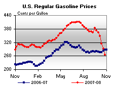 | 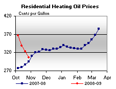 | ||||||
| 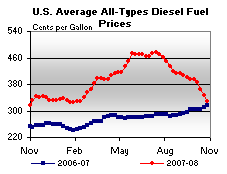 | 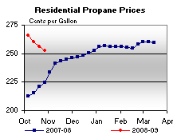 | ||||||
| Retail Data | Changes From | Retail Data | Changes From | ||||
| 10/27/08 | Week | Year | 10/27/08 | Week | Year | ||
| Gasoline | 265.6 | Heating Oil | 305.9 | ||||
| Diesel Fuel | 328.8 | Propane | 252.6 | ||||
| Spot Prices (Cents Per Gallon*) | |||||||||||||||||||||||||||||||||||
| 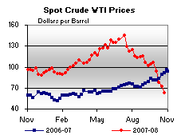 | 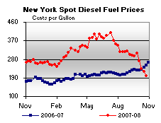 | ||||||||||||||||||||||||||||||||||
| 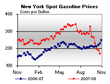 | 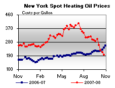 | ||||||||||||||||||||||||||||||||||
|
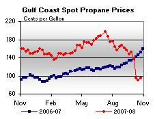 | ||||||||||||||||||||||||||||||||||
| *Note: Crude Oil WTI Price in Dollars per Barrel. | |||||||||||||||||||||||||||||||||||
| Stocks (Million Barrels) | |||||||
 |
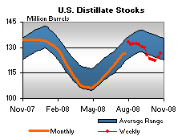 | ||||||
| 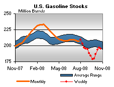 | 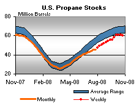 | ||||||
| Stocks Data | Changes From | Stocks Data | Changes From | ||||
| 10/24/08 | Week | Year | 10/24/08 | Week | Year | ||
| Crude Oil | 311.9 | Distillate | 126.6 | ||||
| Gasoline | 195.0 | Propane | 60.404 | ||||